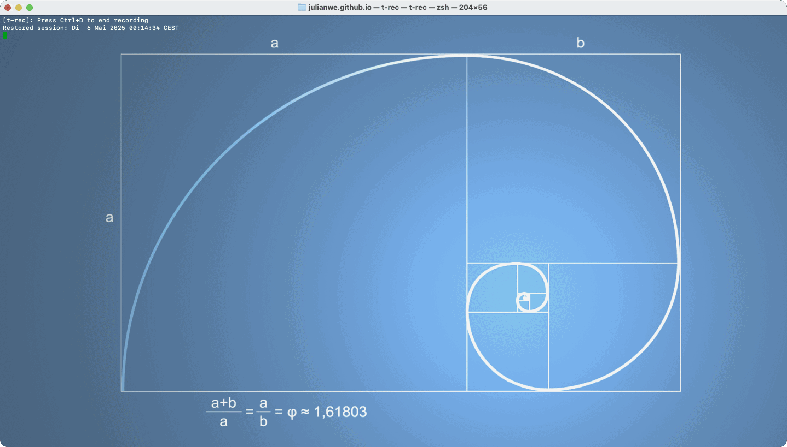

create your own account at https://cloud.google.com/
# run ansible playbook playbooks/gcp.yml to create gcp vm
cd julianwe.github.io/ansible
ansible-playbook playbooks/gcp.yml -vvvcreate your ed25519 credentials to access vm
ssh-keygen -t ed25519 -f ~/.ssh/jw_ed25519 -C jw ; cat ~/.ssh/jw_ed25519.pubaccess new gcp vm using ssh
ssh-keyscan -t ed25519 35.226.46.33 >> ~/.ssh/known_hosts
ssh -i ~/.ssh/jw_ed25519 jw@35.226.46.33
this playbook creates your own vm on gcp and sets your external ip as fact
---
- name: gcloud compute instances create
shell: |
gcloud compute instances create {{ vars.vms.vm.name }} \
--project={{ vars.vms.vm.project }} \
--zone={{ vars.vms.vm.zone }} \
--machine-type={{ vars.vms.vm.size }} \
--network-interface=network-tier={{ vars.vms.vm.network_tier }},stack-type={{ vars.vms.vm.stack_type }},subnet={{ vars.vms.vm.subnet }} \
--metadata=ssh-keys={{ vars.vms.vm.ssh }} \
--maintenance-policy={{ vars.vms.vm.maintenance_policy }} \
--provisioning-model={{ vars.vms.vm.provisioning_model }} \
--service-account={{ vars.vms.vm.sa }} \
--scopes=https://www.googleapis.com/auth/devstorage.read_only,https://www.googleapis.com/auth/logging.write,https://www.googleapis.com/auth/monitoring.write,https://www.googleapis.com/auth/service.management.readonly,https://www.googleapis.com/auth/servicecontrol,https://www.googleapis.com/auth/trace.append \
--create-disk=auto-delete=yes,boot=yes,device-name=ansible-1,disk-resource-policy=projects/akash-456617/regions/us-central1/resourcePolicies/default-schedule-1,image={{ vars.vms.vm.image}},mode=rw,size=10,type=pd-standard \
--no-shielded-secure-boot \
--shielded-vtpm \
--shielded-integrity-monitoring \
--labels=goog-ec-src=vm_add-gcloud \
--reservation-affinity=any \
--enable-nested-virtualization
register: vm
- name: set fact
set_fact:
IPs: "{{ vm.stdout_lines | regex_findall('\\b(?:[0-9]{1,3}\\.){3}[0-9]{1,3}\\b') }}"
- name: External IP
debug:
msg: "{{ IPs.1 }}"
...you can customize vm settings in vars.yml file
---
# vars file for gcp
vms:
vm:
name: kubernetes
image: projects/ubuntu-os-cloud/global/images/ubuntu-2404-noble-amd64-v20250409
size: t2d-standard-1
project: akash-456617
zone: us-central1-a
ssh: jw:ssh-ed25519\ AAAAC3NzaC1lZDI1NTE5AAAAIKTNqCzRZVoWV5hbr4yj\+mnV0ckEBfr68LC3BqZd3JsD\ jw
sa: 513538345283-compute@developer.gserviceaccount.com
network_tier: PREMIUM
stack_type: IPV4_ONLY
subnet: default
maintenance_policy: MIGRATE
provisioning_model: STANDARD
...in order to delete vm use the following command
gcloud compute instances delete kubernetes --zone=us-central1-a